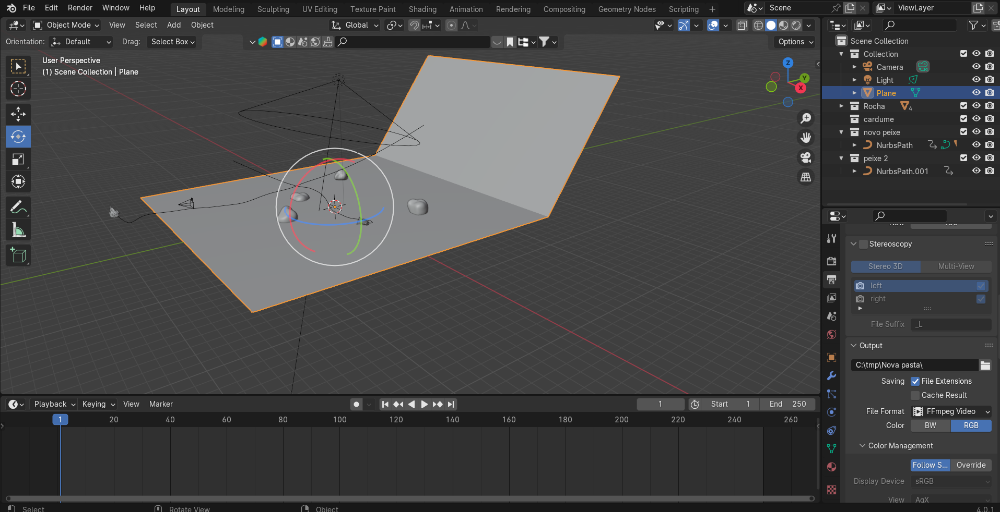
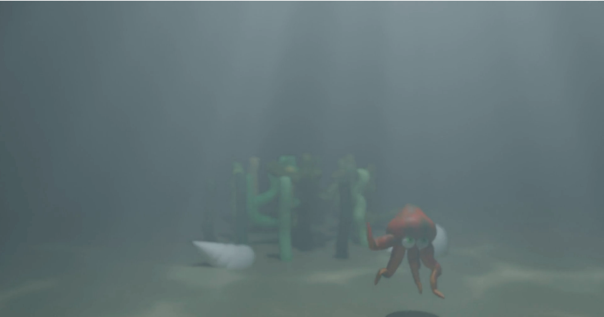

Nesta unidade curricular, o foco foi aprofundar as competências em animação 3D, utilizando o software Blender para executar um projeto completo, desde a modelagem de uma personagem até à sua animação numa curta sequência.
Todo o projeto foi desenvolvido recorrendo a uma ferramenta principal, aproveitando os seus diversos módulos:

O desenvolvimento do projeto seguiu um fluxo de trabalho estruturado, típico de uma produção de animação 3D:

O resultado foi uma curta de animação que demonstrou a aplicação prática de técnicas avançadas de animação de personagens. As principais aprendizagens foram: